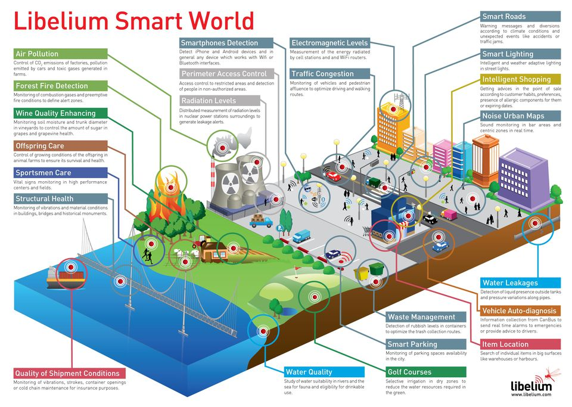

How does this Impact you?
- The reality is that the Internet of Things allows for virtually endless opportunities and connections to take place.
- Say for example you're on your way to a meeting; your car could have access to your calendar and already know the best route to take. If traffic is heavy your car might also be able send a text to the other party notifying them that you will be late.
- On a broader scale, we could apply the Internet of Things to "smart cities".This could help us reduce waste and improve efficiency for things such as energy use, through learning how we live and work. These Smart Cities are portrayed in the image to the right.
- The Internet of Things opens the door to a lot of opportunities but also to many challenges. Security is a big issue, with billions of devices being connected together, we risk the security of our information.
